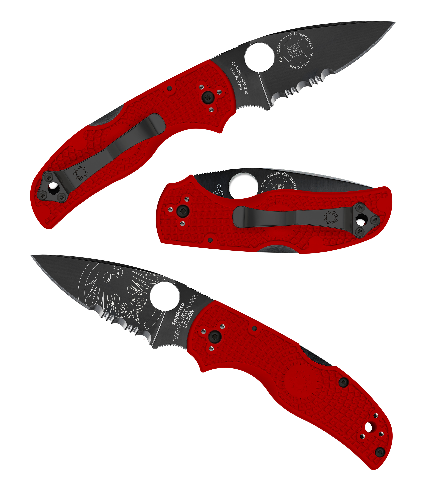

<div id="content">
  <div id="main">
    <div class="container">
      <h1 class="title-has-line text-align-center">25th Anniversary Items</h1>
      <h6 class="text-align-center catalog-description"> </h6>

      <div id="shop-wrapper" data-col="3">
						<ul class="productList productLarge">
							<li id="catProdTd_10871389" class="productItem">

								<div class="product single-page">

									<div class="one_half">
                    <div class="cart-img">
                      
                    </div>
	
									</div>

									<div class="one_half last">

										<h1 class="title-has-line"> Spyderco Special Edition Knife</h1>
										<p class="monospace title-has-line" style="display:none;">
											<span class="sku_wrapper">SKU: <span class="sku">025174DB</span></span>
										</p>

										<h5>
											<span class="amount"><strong>$90.00</strong> </span>
										</h5>

										<p>Special Edition Never Summer X Spyderco Knife!</p>
										<p><strong>PRE ORDERS ONLY</strong>
										</p>
										<p>Pre Order Dates: Now - Dec 13, 2016
											<br />
										</p>
										<p>Knife Shipping: Late February</p>
										<p>
                      Through an exclusive arrangement with the Spyderco knife company of Golden, Colorado, Never Summer is proud to offer this unique, limited edition version of their incredibly popular Native® 5 Lightweight folding knife. The blade of this remarkable knife is precision machined from LC200 N steel - an extraordinary nitrogen-based alloy used by NASA in the ball bearings of high-performance aerospace equipment. Its advanced alloy composition offers exceptional toughness and edge retention and makes it extremely corrosion resistant. To further increase its resistance to the elements, the blade is cloaked in a black Diamond Like Carbon (DLC) coating that also accentuates its laser engraved Never Summer logo. Its full-flat grind and partially serrated CombinationEdge&trade; cutting edge ensure superior cutting performance on all types of materials and the Trademark Round Hole&trade; in the blade allows quick one-handed opening with either hand.
											<br />
										</p>
										<p>
                      The blade is paired with an ultra-lightweight handle injection molded from tough fiberglass-reinforced nylon (FRN). The bright red handle features Spyderco’s Bi-Directional Texturing&trade; pattern for a secure grip in even the most demanding conditions and is home to a highly refined back lock mechanism that locks the blade securely open during use. A four-position pocket clip allows the user to configure the knife for right or left-side tip-up or tip-down carry. This feature, along with the back lock and Round Hole, makes every aspect of this knife’s carry and operation completely ambidextrous.&nbsp;</p>
										<p>
                      This extraordinary knife will be produced in limited quantities and will be available exclusively through Never Summer. Sales will benefit the National Fallen Firefighters Foundation.
                    </p>
										<p>
                      Don’t miss this opportunity to show your Never Summer pride and support our nation’s fallen firefighters by owning one of the coolest knives ever made!
                    </p>

										<div class="addthis_custom_sharing"></div>

										<br />

										<div class="variations_button">
											<form action="#">
												<div class="minus"></div>
												<input id="Units_10871389" class="productTextInput" name="AddToCart_Amount" type="text" value="1" />
												<div class="plus"></div>
											</form>
											<input class="productSubmitInput" type="submit" value=" Buy Now" />
										</div>

									</div>
								</div>
							</li>
						</ul>
					</div>

          <hr>

    </div>
  </div> 
</div> 